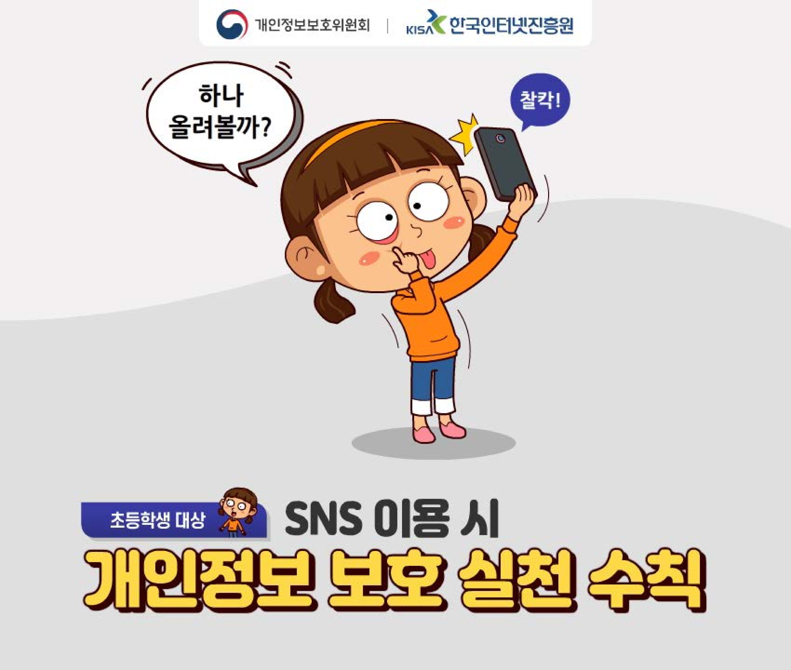

|
 |
 |
 |
 |
 |
 |  |
 |
 |
 |
 |
02 개인정보보호의 필요성과 방법(35p) 청소년들이 디지털 환경에서 올바른 관계 맺기와 소통할 수 있도록 개인정보 보호의 필요성과 방법을 학습 온라인 테스트를 통해 디지털 시민으로서 자신만이 가진 개인정보에 대해 생각해 보고, 디지털 세상에서 개인정보의 공개 및 관리에 대한 판단과 책임을 학습 |
03 저작권 위반? 저작권이 뭔데?(57p) - 정보사회 구성원으로서 개인정보와 저작권 보호의 중요성을 인식하고 개인정보 보호, 저작권 보호 방법을 실천한다. 게임형식으로 저작물을 유형을 이해하고 분류하할 수 있도록 학습 |
06 함께 지켜요! 우리의 저작권!(105p)(4분 8초) 착각하기 쉬운 저작권을 퀴즈 형식으로 전달 |
개인정보의 개념과 중요성: 1. 개인정보? 그게 뭐예요?(3분 59초) 최근 개인정보가 유출되는 사건이 많으므로 관련 개념과 중요성을 사례를 통해 확인 |
개인정보의 개념과 중요성: 2. 개인정보가 위험해요!(5분 12초) 최근 개인정보가 유출되는 사건이 많으므로 관련 개념과 중요성을 사례를 통해 확인 |
개인정보의 개념과 중요성: 3. 개인정보를 구해줘요!(5분 36초) 최근 개인정보가 유출되는 사건이 많으므로 관련 개념과 중요성을 사례를 통해 확인 |
세대별로 실천해야 할 개인정보 보호 수칙 아동편(초등학생 손자)_개인정보보호 실천_카드뉴스 (출처: 개인정보포털, www.privacy.go.kr) |
세대별로 실천해야 할 개인정보 보호 수칙 중장년편(부모)_개인정보보호 실천_카드뉴스 (출처: 개인정보포털, www.privacy.go.kr) |
세대별로 실천해야 할 개인정보 보호 수칙 어르신편(조부모)_개인정보보호 실천_카드뉴스 (출처: 개인정보포털, www.privacy.go.kr) |
현이네는 저작권 가족(초등용) 엄마, 아빠, 그리고 오빠와 함께 사는 우리친구 현이. 현이네 가족은 ‘저작권 가족’ 이라는 별명이 붙어 있답니다. 왜 많고 많은 별명 중에 하필 ‘저작권 가족’ 일까요? 현이네 가족의 저작권 이야기. 어떤 이야기일지 이제 들어보자고요 (출처: 한국저작권위원회, https://www.copyright.or.kr) |
삼총사의 저작권 도장 수련기(중등용) 아무 생각 없이 다른 사람의 글, 게임, 콘텐츠들을 이용해 오던 장폭우, 박리, 그리고 나보아. 이 세 친구에게 ‘저작권 도장 수련’ 이라는 벌이 내려졌답니다. 듣기만 해도 특이한 도장인데 거기엔 더 요상한 사부님이라는 분이 계시네요 (출처: 한국저작권위원회, https://www.copyright.or.kr) |
온라인에서의 위험상황 대처법 온라인상의 다양한 위험상황을 구체적인 사례를 통해 이해할 수 있도록 구성하였고 QR코드로 심화 내용 확인이 가능함. |